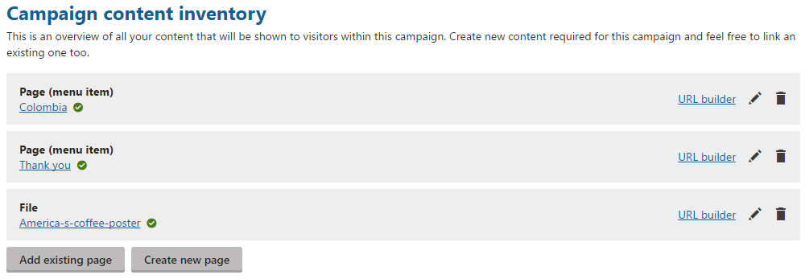
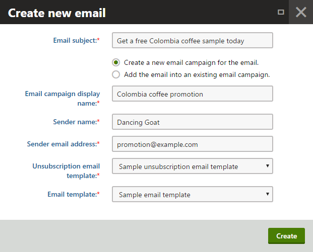

Setting up campaigns
Set up a campaign when you want to bring new visitors to your website to promote your brand or products.
Not sure what campaigns are?
To learn general information about on-line marketing campaigns in Kentico, see Campaigns.
To learn how to schedule and evaluate campaigns, see Scheduling and evaluating campaigns.
You can manage campaigns in the Campaigns application.
To set up a campaign:
Set what you want to see in campaign reports (conversions and the campaign journey)
Creating new campaigns
To create a new campaign:
Open the Campaigns application.
Click Create new campaign.
Type the Display name of the new campaign.
Type the UTM campaign parameter.
The parameter defines the utm_campaign parameter in link URLs. For example, if you set the parameter value to MyCampaign parameter, link URLs will have the following form: http://www.mywebsite.com/Home.aspx?utm_campaign=MyCampaign
(Optional) Type the Description of the campaign. You can use the Description field for your additional information and notes like its purpose, goals, etc.
Your changes in campaigns are saved automatically as you fill in its details. Read further to learn about the other configuration parts of the campaign.
Putting all involved content together
Add pages to the Campaign content inventory to get to know quickly what content is involved in your campaign.
Also, you can use the Create new page button to create a page directly from the Campaigns application. The created page is stored like any other page in the content tree of the Pages application. The location of new pages in the content tree is set by the New page location on-line marketing setting.

Adding pages to the Campaign content
Adding pages to campaigns on MVC sites
If your Campaign content inventory section contains the Add page button instead of the Create new page button, see Adding pages to campaigns on MVC sites for adding the campaign content.
Using published and unpublished pages
Look at the icon next to a page name to know immediately whether the page is published or not. A green tick (
) designates already published pages whereas a red cross ( ) designates unpublished pages.
) designates unpublished pages.
See Configuring workflows to learn how to work with workflows that can publish and unpublish pages.
The Campaign content inventory is in the system for your overview. You do not necessarily need to add any content to the inventory, and the campaign will still work based on the UTM campaign parameter and conversions you set later on.
Adding promotional emails to marketing campaigns
Promotional channels allow you to define sources through which you will address your target audience. In Kentico, you can define emails as the sources for campaign promotion. When you create a promotional email and associate it with a campaign, the system will recognize visitors that come to your website by clicking the links in the email.
To associate emails with a campaign:
Click Add existing email or Create new email.
Existing emails that have already been sent in previous campaigns will not be sent again. If you need to send the same content in multiple campaigns, we recommend cloning the email.
You can see the email also in the Email marketing application, where all marketing emails are stored.
Select an existing email or create an email that you want to associate with your campaign.
If you create a new email, you need either to connect an existing email campaign (from the Email marketing application) or to create a new one.

Creating a new campaign email
The system associates the email with the campaign and displays it in the Campaign promotion section.
The UTM Source field at each email defines the value of the utm_source parameter in the URL of links automatically. If you prefer to have specific values for the utm_source parameters, you can modify them. All changes are saved automatically.
Using other promotional channels
You can also use other channels than email for campaign promotion, such as Facebook or Twitter. You only need to use a correct URL in the links within your posts. When visitors click on links containing the URL, the system recognizes the social network which they came from and logs appropriate statistical data for them.
To get a URL that you can use in other promotional channels:
In the Campaign content inventory, click URL builder next to the page for which you want the link.
Fill in the UTM Source, UTM Medium and UTM Content parameters.
The system automatically generates a link with the given UTM parameters and the campaign's utm_campaign parameter.
Copy the link from the Page link with UTM parameters field.

Getting a campaign asset linkUse the link in your external promotional channels. For example, in Facebook posts or in Tweets.
The system counts conversions from these links too. Conversions are then calculated and displayed among all campaign statistics.
Setting campaign reports
Kentico tracks all actions (i.e., activities in Kentico terminology) that can be used for tracking visitors in campaigns. Pick those actions that you are interested in.
You can track the following actions:
|
Type of actions |
What a visitor needs to do |
Notes |
|
Event booking |
The visitor books an event. |
You can track booking of a specific event or any event. |
|
Form submission |
The visitor submits a form. |
You need to specify which form is tracked. |
|
Internal search |
The visitor searches for something using the search on the website. |
|
|
Page visit |
The visitor opens a page. |
You need to specify which page is tracked. If a page is A/B tested, you can also select one of its page variants. However, the campaign report displays the total number of all page variant visits. Therefore, we recommend that you only select the original variant of an A/B tested page. |
|
Product added to shopping cart |
The visitor adds a product to the shopping cart. |
You can track adding of a specific product or any product. |
|
Purchase |
The visitor makes an order. |
To track a specific product, select the Purchased product activity. |
|
Purchased product |
The visitor makes an order with a specific product. |
You need to specify which product is tracked. To track any purchased product, select the Purchase activity. If the product has product variants, you can select only the parent product, not the specific variants. |
|
Subscription to a newsletter |
The visitor subscribes to a newsletter |
You can track subscribing to a specific newsletter or any newsletter. |
|
User registration |
The visitor registers and becomes a user. |
|
Campaign reports in Kentico consist of two parts, the conversion report and the campaign journey report. You can set what the reports will look like in the Campaign report setup section.
Moreover, you can set the main objective of the campaign. This objective (or goal) is a number of a specific conversion based on which you decide whether the campaign was successful.
Setting conversions
Conversions are individual activities that you are interested in. For example, you can decide that you want to track how many times a visitor subscribed to a newsletter, and how many times a product was purchased. Basically, put here the goals of the campaign, i.e., why you are actually running the campaign. Then, you can see which goals were fulfilled and which were not.
Conversions do not need to relate to each other. You need to set at least one conversion to launch a campaign.
Difference from the campaign journey
If you are not sure about the difference, see an example in Scheduling and evaluating campaigns.
To set the campaign's conversion metrics:
Click Add conversion in the Conversions section to open the Define conversion dialog.
Select a type of the visitor activity that you want to track.
Based on the selected type, another field can appear where you can select a specific object that is tracked.
For example, if you select the Page visit visitor activity, you then need to select which page is tracked for the visit.
See the table above for more information.
Click Save to add the conversion and to close the dialog.
The campaign is automatically saved. You can add another conversion if desired.
Campaign conversions vs. custom conversions
In Kentico, there are currently two types of conversions. Conversions described here are used for on-line marketing campaigns only.
The second type, called custom conversions, is used for logging specific actions, typically for purpose of A/B tests or tracking page conversions in general outside a campaign scope. If you are interested in that type of conversions, see Logging custom conversions on your website.
Setting the campaign journey
The campaign journey is a sequence of steps that result in the most important conversion. For example, you want to promote purchases of a product, so you add visiting a landing page, adding the product to the shopping cart, and then purchasing the product to the journey. The journey represents the ideal steps that the campaign visitor will follow. In the reports, you can see then which step is the biggest problem for the visitors, and you can remove this obstacle.
Difference from conversions
If you are not sure about the difference, see an example in Scheduling and evaluating campaigns.
To set the campaign's ideal journey:
Click Add step in the Campaign journey section to open the Define step dialog.
Select a type of the visitor activity that you want to track.
Based on the selected type, another field can appear where you can select a specific object that is tracked.
For example, if you select the Page visit visitor activity, you then need to select which page is tracked for the visit.
See the table above for more information.
Click Save to add the journey step and to close the dialog.
The campaign is automatically saved. You can add another journey step if desired.
Conversion steps are not mandatory for campaigns. If you do not want to set them, you can launch a campaign without them.
Adding the Page visit activity on MVC sites
If you need to add the Page visit activity as a new conversion or a campaign journey step on MVC sites, see Adding the Page visit activity on MVC sites for more information.
Setting the campaign objective
When launching a campaign, you typically have some target set. If the target is met, you know that the campaign fulfilled your expectations. In Kentico, you can set how many conversions you expect from a conversion that you track.
To set the campaign objective:
Click Set objective in the Campaign objective section to open the Set campaign objective dialog.
In the Conversion field, select a conversion that is your primary indicator of the campaign success.
If such conversion is not there, go back to conversions and add one.
Type the target number of the selected conversion to the Target field.
Click Save to add the objective and to close the dialog.
The campaign is automatically saved. After you launch the campaign, you can see the progress towards the target number on the Report tab.
The campaign objective is not mandatory for campaigns. If you do not want to set any goals, you can launch a campaign without them.
Scheduling or launching campaigns
When you have defined your campaign, check if you have completed all items on the launch checklist we provided. If so, you are ready to either schedule the campaign or launch it manually.
You can do both actions on the Schedule tab. See more about launching and then evaluating campaigns in Scheduling and evaluating campaigns.
Kentico EMS required
Features described on this page require the Kentico EMS license.